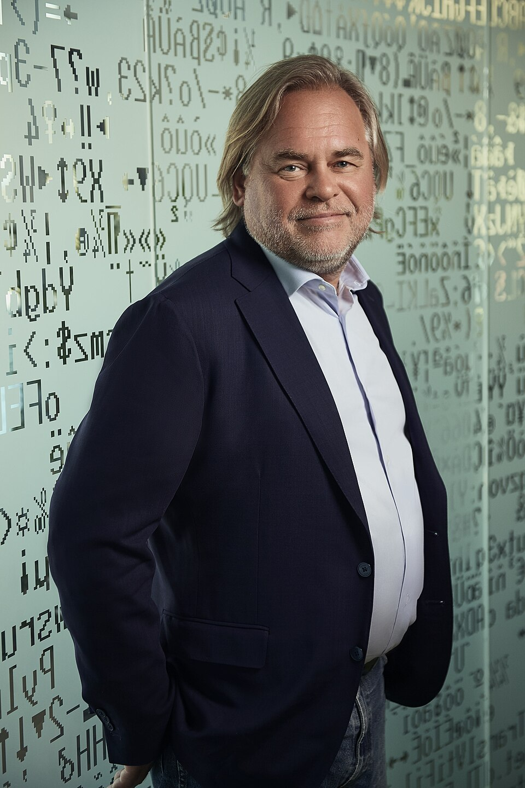

Введение

Евге́ний Валенти́нович Каспе́рский (род. 4 октября 1965, Новороссийск, Краснодарский край) — российский программист, один из ведущих мировых специалистов в сфере информационной безопасности и предприниматель.
Он является одним из основателей, основной владелец и нынешний глава АО «Лаборатория Касперского» — международной компании, занимающейся разработкой решений для обеспечения IT-безопасности, имеющей более 30 региональных офисов и ведущей продажи в 200 странах. Лауреат Государственной премии в области науки и технологий за 2008 год.
Я себя ощущаю человеком, который находится на передовой линии фронта в войне с киберпреступниками- Евгений Касперский в интервью журналу «Компьютерра»